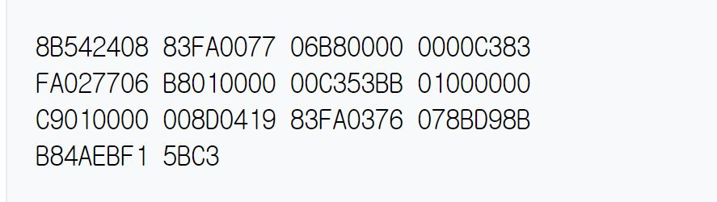
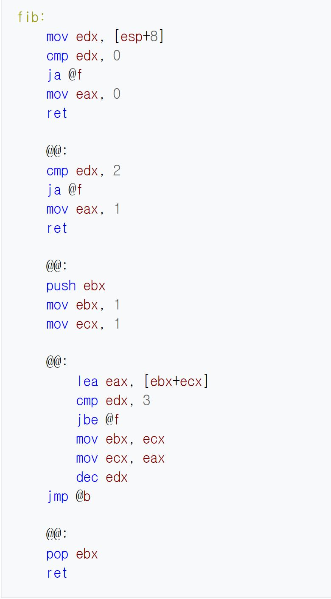
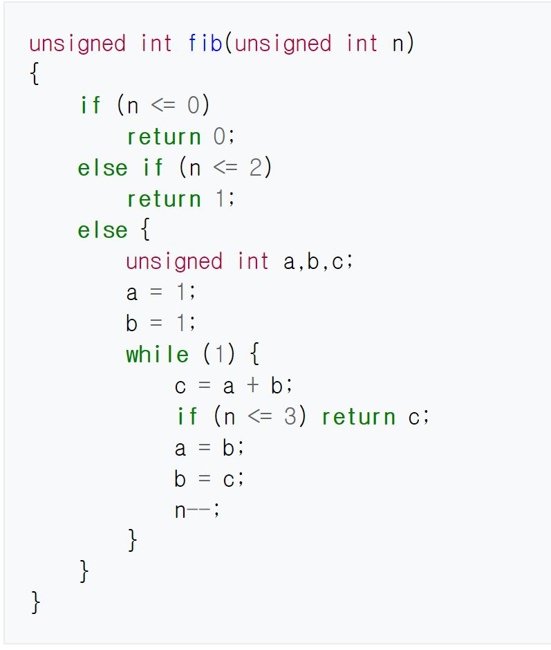
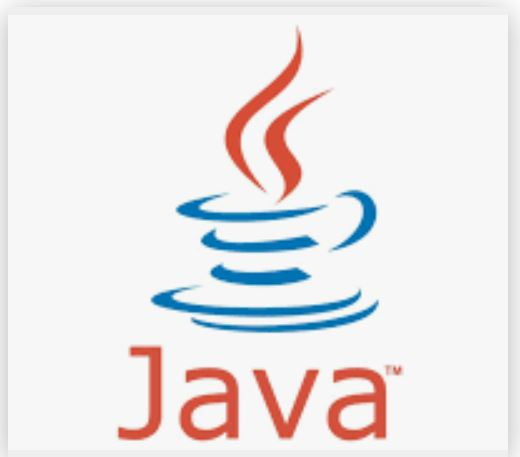
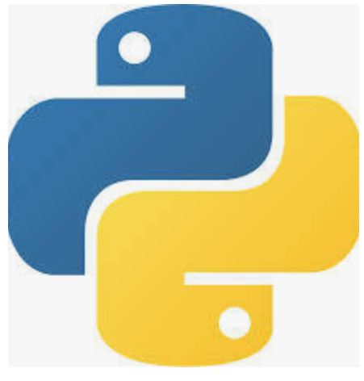

역사
최초의 컴퓨터는 종종 프로그래밍 언어의 도움 없이 프로그래밍되었는데, 이는 프로그램들을 절대적인 기계어로 작성함으로써 이루어졌다. 10진이나 이진 형태의 프로그램들은 천공 카드나 자기 테이프로부터 읽거나 컴퓨터 프론트 패널의 스위치를 켜고 끔으로써 불러들였다. 절대적인 기계어는 나중에 1 세대 프로그래밍 언어(1GL)로 명칭이 정해졌다.
프로그래밍 언어는 컴퓨터 시스템을 구동시키는 소프트웨어를 작성하기 위한 형식언어이다. 고급 언어일수록 사람이 사용하는 언어에 가깝다.
최초의 컴퓨터는 종종 프로그래밍 언어의 도움 없이 프로그래밍되었는데, 이는 프로그램들을 절대적인 기계어로 작성함으로써 이루어졌다. 10진이나 이진 형태의 프로그램들은 천공 카드나 자기 테이프로부터 읽거나 컴퓨터 프론트 패널의 스위치를 켜고 끔으로써 불러들였다. 절대적인 기계어는 나중에 1 세대 프로그래밍 언어(1GL)로 명칭이 정해졌다.
저급 프로그래밍 언어 （低級 프로그래밍 言語）또는 로우 레벨 프로그래밍 언어(low-level programming language)란 컴퓨터가 이해하기 쉽게 작성된 프로그래밍 언어로, 일반적으로 기계어와 어셈블리어를 일컫는다.
고급 프로그래밍 언어 또는 하이 레벨 프로그래밍 언어(high-level programming language)란 사람이 이해하기 쉽게 작성된 프로그래밍 언어로서, 저급 프로그래밍 언어보다 가독성이 높고 다루기 간단하다는 장점이 있다.
|  |  |  |  |  |
captured by google image & wikipedia